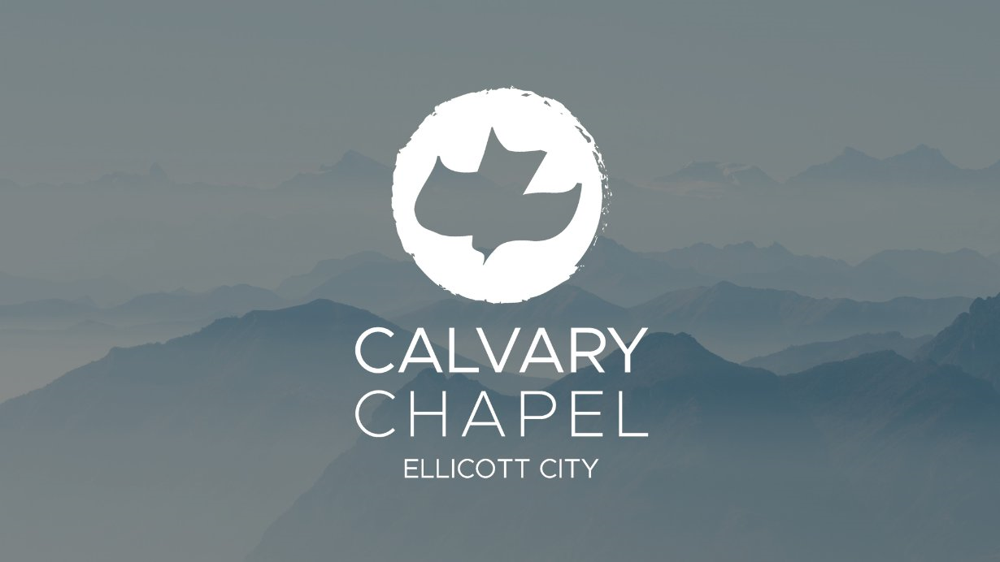

Gorski Family Office
The Gorski Family Office specializes in institutional private equity, hedge funds, and structured investments. We partner with global leaders such as Hamilton Lane, Blackstone, Ares, KKR, Apollo, Blackrock, North Haven, Veritas, Clearlake, Alphakeys, Churchill, and Coller to drive long-term growth and stewardship.


Gorski Foundation
Operated by the Gorski Family Office, the Gorski Foundation is a Christian organization supporting evangelical efforts and community programs locally and globally. Our mission spans vulnerable women in Latin America, immigrant support, global health education, youth programs, and more.



Explore Foundation
Our Impact At A Glance
- Supporting Calvary Chapel Of Ellicott City in local ministry
- Empowering women in Latin America via Be Love
- Championing immigrant support with Iglesia Conexion al Reino
- Advancing global health through International Help
- Broadcast ministry outreach in Mexico
- Urban youth transformation with TeenBlast
- Missionary work in Sweden and with Poland
- And many other non-profits worldwide